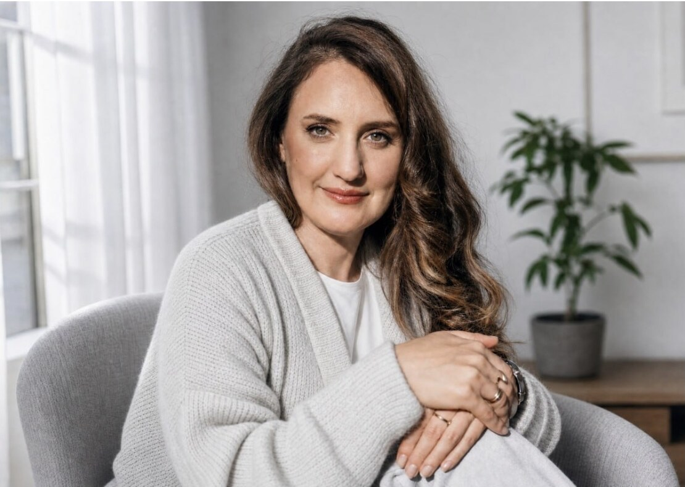

Карта клиента
Жизненная ситуация и нужное изменение
Мы учитываем контекст, жалобу, язык человека, прежние попытки справиться и результат, к которому он хочет прийти.
Программа для практикующих психологов
В течение 12 недель мы исследуем профессиональную идентичность специалиста: опыт, компетенции, качества, способности, специализацию, ценности, задачи и перспективу развития. Результаты трека определяют содержание профиля, связи с клиентскими маршрутами и место специалиста в профессиональной среде проекта.
Философия InTreatment
Дипломы, методы и перечень запросов дают только часть информации о психологе. Для точного подбора важно понимать, как специалист видит ситуацию клиента, на что опирается в работе, какие решения принимает, как и какие изменения помогает создавать для клиента.
Карта клиента
Мы учитываем контекст, жалобу, язык человека, прежние попытки справиться и результат, к которому он хочет прийти.
Карта специалиста
Мы описываем опыт, компетенции, качества, ценности, границы и устойчивую логику профессиональных решений.
Решение платформы
На основании карты профессиональной идентичности специалиста система получает содержательные признаки совпадения и может связать профиль психолога с подходящими клиентскими ситуациями.
Психологическое место
В треке мы выясняем, какой формат отношений с коллегами поддерживает специалиста, какой вклад ему интересен и какие условия помогают сохранять автономию. Результатом становятся понятная роль, рабочие связи и пространство для инициативы.
Технологическое место
Команда переводит результаты исследования в профиль, связи с ветками подбора и клиентские маршруты InTreatment. Конфигурация зависит от реальной специализации и способа работы психолога.
Профессиональная среда
InTreatment развивается как горизонтальная междисциплинарная среда. Специалисты сохраняют самостоятельность, обсуждают практику, поддерживают исследовательский интерес и создают совместные форматы работы.
Каждому специалисту важно чувствовать, что его профессиональный способ работы понятен коллегам и находит применение в общем проекте. Такое положение поддерживает мастерство, устойчивость и качество отношений с клиентами.
Поэтому интеграция включает знакомство с командой, обсуждение взаимных ожиданий и поиск точек сотрудничества.
Участники обращаются друг к другу за профессиональным взглядом, рекомендацией и совместной работой над задачами клиента.
Специалист может участвовать в развитии маршрутов, материалов, образовательных форматов и других решений платформы.
Возможные направления включают углубление практики, наставничество, менторство, супервизию и авторские проекты.
Договорённости учитывают профессиональные границы, нагрузку и желаемую степень участия специалиста.
Архитектура проекта
Интеграция представляет собой сборку нескольких связанных элементов. Команда создаёт для специалиста профиль и клиентские пути, а также уточняет его связи с коллегами, задачами и возможностями развития.
Исследуем профессиональный опыт, компетенции, качества и результаты работы.
Формулируем уникальное позиционирование, портрет клиента и основные клиентские ситуации.
Связываем специалиста с клиентами, запросы которых наиболее точно соответствуют специализации психолога.
Создаём профиль, определяем рабочие связи и согласуем ближайшие задачи в проекте.
Принцип интеграции
Архитектура платформы учитывает индивидуальную специализацию и способ работы. Когда в команду присоединяется новый специалист, InTreatment уточняет клиентские маршруты именно для него.
Отправная точка и результат
Точка А
Точка Б
Задачи трека
Содержание каждой задачи связано с интеграцией в InTreatment и одновременно укрепляет самостоятельную практику специалиста.
Связываем образование, прошлые роли, выборы и поворотные эпизоды, чтобы увидеть устойчивую логику развития.
Это даёт основание для карты идентичности и будущей роли в проекте.Разбираем реальные случаи и уточняем, что вы замечаете, как строите гипотезы и почему выбираете конкретные действия.
Платформа получает точные признаки профессионального совпадения.Описываем желаемое профессиональное будущее, этапы развития и ближайшую задачу, которая ведёт к выбранной перспективе.
Роль в InTreatment согласуется с вашим направлением роста.Выделяем клиентские ситуации, потребности, ограничения и результаты, в которых ваша специализация раскрывается наиболее полно.
На этой основе строятся клиентские маршруты и ветки подбора.Переводим профессиональные формулировки в узнаваемые ситуации, вопросы и ожидания человека, который ищет помощь.
Профиль помогает клиенту понять основания рекомендации.Сопоставляем ценности, интересы, формы участия и перспективы развития с возможностями экосистемы InTreatment.
Так формируется психологическое и технологическое место специалиста.Программа интеграции
Последовательность этапов отражает общую методологию, при этом глубину каждого этапа мы определяем после знакомства и аудита текущей практики.
Собираем объёмное описание текущей ситуации, проверяем профессиональные опоры и фиксируем активы: знания, умения, опыт, связи и доступные ресурсы.
Результат: карта точки А, критерии результата и индивидуальная логика работы.
Формулируем образ будущего, рассматриваем уровни профессионального развития и определяем точку мастерства внутри проекта и за его пределами.
Результат: ориентиры развития и критерии следующего профессионального этапа.
Разбираем реальные эпизоды практики и собираем инструментальные и стратегические компетенции, сильные стороны и качества, за которые клиенты выбирают специалиста.
Результат: карта компетенций и описание результатов, которые возникают в процессе работы и сохраняются после её завершения.
Соединяем жизненный и профессиональный опыт, устойчивый интерес, компетенции, ограничения и результаты клиентов в ясную специализацию.
Результат: формулировка специализации, границы практики и первичное понимание подходящей аудитории.
Исследуем желания, задачи, страхи и критерии выбора клиентов. Затем собираем формулировки, которые отражают их внутренний диалог и помогают узнать свою ситуацию.
Результат: карта клиентских ситуаций, язык профиля и основа коммуникационной стратегии.
Описываем ценности и профессиональные смыслы специалиста, после чего сопоставляем их с задачами, пространством и направлениями развития проекта. Разрабатываем индивидуальный портфель продуктов специалиста, которые будут интегрированы в платформу и встроены в путь клиента.
Результат: согласованная карта участия, взаимных ожиданий и возможного вклада, а также портфель авторских продуктов для клиентов.
Создаём технологическое место на платформе, выстраиваем клиентские пути, обсуждаем горизонтальное развитие в профессии и возможные роли в наставничестве, менторстве, супервизии и авторских проектах.
Результат: настроенный профиль, план включения в команду и ближайший маршрут развития.

Фрагмент реального трека
Отправная точка. У Анастасии уже была действующая практика, однако ей было трудно точно объяснить собственную профессиональную ценность и обозначить клиентов, которым особенно подходит её способ работы.
Что обнаружили. Разбор сессий помог описать устойчивый профессиональный способ Анастасии: она создаёт безопасный контакт, замечает тонкие телесные и эмоциональные сигналы, различает собственные переживания и переживания клиента, выбирает подходящий момент для интервенции.
Результат. Исследование стало основой специализации, текста профиля и видеовизитки. Клиентка, которой прежде было трудно выбрать психолога среди представленных специалистов, узнала в новой формулировке свою ситуацию и обратилась к Анастасии.
Пример показывает, как содержание карты профессиональной идентичности переводится в понятную клиенту специализацию. Количество обращений зависит от спроса, совпадения клиентских ситуаций и текущей работы платформы.
Результаты
Состав зависит от индивидуальной задачи. Все созданные материалы можно использовать в InTreatment и в самостоятельной профессиональной практике.
Основной артефакт
Модель профессиональной фигуры специалиста объединяет результаты исследования и становится основанием для решений об интеграции.
Прикладной результат
Продукты разрабатываются на основании специализации и реальных клиентских ситуаций. Для каждого решения команда описывает:
ситуацию, потребность и ожидаемый результат
формат, содержание и профессиональную логику специалиста
точку входа, связи с другими этапами и условия рекомендации
представление продукта на платформе и рабочие связи внутри проекта
| Артефакт | Применение в InTreatment | Применение за пределами проекта |
|---|---|---|
| Карта профессиональной идентичностиОпыт, компетенции, качества, ценности и границы | Основа роли и решений об интеграции | Выбор обучения, нагрузки и направления развития |
| Профессиональное видениеТочка мастерства и этапы роста | Перспектива развития внутри экосистемы | Стратегия частной практики и авторских проектов |
| Формулировка специализацииКому, в каких ситуациях и каким способом вы помогаете | Позиция в системе подбора | Сайт, рекомендации, выступления и партнёрства |
| Карта клиентских ситуацийКонтекст, жалобы, потребности и нужное изменение | Связи с ветками подбора и клиентскими маршрутами | Разработка услуг, материалов и продуктов |
| Пакет профиляПолный и короткий тексты, видеовизитка, описание подхода | Карточка психолога и точки контакта с клиентом | Собственные площадки и профессиональные знакомства |
| Карта интеграцииРоль, договорённости, задачи и направления сотрудничества | Включение в среду и процессы проекта | План профессионального развития и сотрудничества |
| Портфель продуктов для клиентовКонцепции, задачи, форматы и место каждого продукта в пути клиента | Продукты и точки их интеграции в платформу | Развитие авторской линейки услуг и программ |
Опыт участницы · 2:57
Инна, психолог команды, делится опытом участия в InTreatment. Она говорит о здоровых профессиональных связях, сопричастности, сотворчестве, поддержке и безопасности, а также о возможности сохранять автономию внутри общего проекта.
Открыть видео на YouTubeФормат работы
Основная программа занимает 12 недель и включает регулярные встречи, индивидуальное исследование и работу с материалами между сессиями. После завершения команда закладывает до двух недель на настройку профиля, клиентских связей и техническую интеграцию специалиста.
Маршрут, график и актуальную стоимость обсуждаем после встречи-знакомства, поскольку объём работы зависит от исходной точки и задач специалиста.
Сооснователь InTreatment и ведущий ментор
Психолог, ментор помогающих практиков, автор методологии исследования профессиональной идентичности
«Моя задача как ведущего ментора состоит в том, чтобы помочь специалисту увидеть сложившееся мастерство, найти для него точные слова и вместе с командой создать ему место в профессиональной среде и архитектуре InTreatment».
Методология трека выросла из практической работы с коллегами. Внимательное исследование профессиональной идентичности помогает распознавать компетенции, качества и специализацию психолога, понимать подходящие клиентские ситуации и принимать обоснованные решения об интеграции.
Перед знакомством
Ясно сформулированная уникальная специализация становится результатом большой внутренней работы по осмыслению себя и своей практики. Чаще всего специалисту трудно сформулировать её самостоятельно.
Самоописание также может перестать соответствовать реальным задачам специалиста и запросам клиентов. На старте программы вам необязательно понимать своё аутентичное позиционирование: оно проявится и станет яснее в процессе исследования практики.
В программу входят определение уникального позиционирования, тексты профиля, язык для разговора с клиентом и видеовизитка. Эти материалы создаются в результате исследования практики, поэтому формулировки опираются на реальные профессиональные решения и клиентские случаи. Они входят в карту профессиональной идентичности, которая остаётся у вас как артефакт работы в треке.
Программа интеграции не определяет будущую загрузку специалиста. Она помогает точнее представить его клиенту и включить в систему подбора. Количество обращений зависит от клиентского спроса, текущей экономической и политической ситуации и других факторов.
Все карты, формулировки, тексты, продукты и планы остаются у специалиста. Они подходят для собственного сайта, социальных сетей, рекомендаций коллег, образовательных решений, авторских продуктов и дальнейшего профессионального развития.
Первый шаг
На встрече вы познакомитесь с подходом InTreatment, получите первую обратную связь и сможете оценить, подходит ли вам программа.